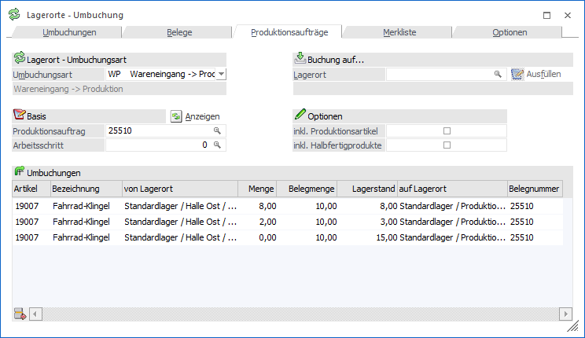
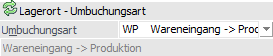
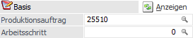
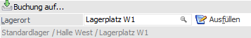
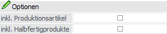
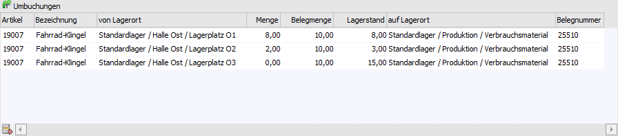
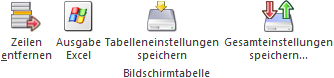

In dem Register "Produktionsaufträge" können Umbuchungsvorschläge auf Grundlage von WinLine PPS-Aufträgen unterbreitet werden.

Lagerort - Umbuchungsart

Ø Umbuchungsart
Hier wird die Umbuchungsart angegeben, mit der die Umbuchung stattfinden soll.
Basis

Ø Produktionsauftrag
In dem Feld "Produktionsauftrag" erfolgt die Angabe des WinLine PPS-Auftrags, dessen Komponenten / Artikel auf einen anderen Lagerort umgebucht werden sollen. Hierbei werden nur die Komponenten / Artikel in der Umbuchungstabelle aufgeführt, welche eine Lagerortstruktur hinterlegt haben.
Ø Arbeitsschritt
Handelt es sich um einen Produktionsauftrag mit unterschiedlichen Arbeitsschritten, so kann hier die Auswahl des Arbeitsschritts erfolgen. Die Eingabe "0" bewirkt die Berücksichtigung aller Arbeitsschritte.
Ø  Anzeigen
Anzeigen
Bei Anwahl des Buttons "Anzeigen" wird die Umbuchungstabelle mit den Komponenten / Artikeln des Produktionsauftrags neu gefüllt.
Buchung auf…

Mit Hilfe des Bereichs "Buchung auf…" kann ein allgemeiner Lagerort für die Spalte "auf Lagerort" definiert werden.
Hinweis
Folgende Punkte sind hierbei zu beachten:
ü Der Lagerort wird nur bei Artikeln gesetzt, welche sich in derselben Struktur wie der "Buchung auf…"-Ort befinden.
ü Der Lagerort wird nicht gesetzt, wenn der "von Lagerort" derselbe Ort ist.
ü Im Register "Optionen" (Bereich "Optionen - Buchung auf…") können benutzerspezifische Einstellungen für die Zuweisung des "auf Lagerort"-Eintrages definiert werden.
Ø Lagerort
An dieser Stelle kann der "auf Lagerort" für bestehende (siehe Button "Ausfüllen") und / oder neue Umbuchungszeilen definiert werden.
Ø Ausfüllen
Durch Anwahl des Buttons "Ausfüllen" wird der "Buchung auf…"-Lagerort als "auf Lagerort" in die Umbuchungszeilen der Tabelle eingetragen.
Optionen

Die hier hinterlegten Einstellungen werden benutzerspezifisch gespeichert.
Ø inkl. Produktionsartikel
Mit Hilfe dieser Option wird auch der Produktionsartikel selber in der Umbuchungstabelle dargestellt, wenn es sich bei diesem um einen Artikel mit hinterlegter Lagerortstruktur handelt.
Ø inkl. Halbfertigprodukte
Bei Aktivierung dieser Option werden auch die Halbfertigprodukte des Produktionsauftrags in der Umbuchungstabelle dargestellt. Grundvoraussetzung hierfür ist die Hinterlegung einer Lagerortstruktur.
Tabelle "Umbuchung"

In der Tabelle können die vorgeschlagenen Umbuchungszeilen editiert werden.
Hinweis
Neben den direkt angezeigten Spalten stehen viele optionalen Spalten zur Verfügung. Dieses können über das Kontextmenü der rechten Maustaste (Funktion "Spalten anzeigen/verstecken") in die Tabelle eingebunden werden.
Ø Artikel
Die Komponenten / Artikel werden aufgrund des Produktionsauftrags vorgeschlagen und an dieser Stelle angezeigt. Eine manuelle Erfassung von neuen Umbuchungszeilen ist nicht möglich.
Ø Bezeichnung
In dieser Spalte wird die Bezeichnung des Artikels angezeigt.
Ø Datum
In dem Feld "Datum" muss das Datum angegeben werden, mit welchem die Umbuchung getätigt werden soll. Erfolgt die Eingabe eines Datums, welches außerhalb des Wirtschaftsjahres liegt, so erscheint ein entsprechender Hinweis.
Hinweis
Das Datum wird mit jenem des Einlogvorgangs vorbesetzt. Entspricht dieses nicht dem aktuellen Wirtschaftsjahr, so wird die Spalte "Datum" automatisch eingeblendet.
Ø von Lagerort
Hier wird der Lagerort angegeben, von welchem Bestand abgebucht werden soll. Die Erfassungsmethode des Orts ist abhängig von der gewählten Einstellung im Register "Optionen" (Bereich "Erfassungsmethode").
ü Einzelerfassung
Es wird das
Fenster "Lagerorte erfassen" geöffnet und alle Orte mit passender
Lagerortfunktion und Bestand angezeigt.
ü Manuelle Eingabe
In dem Feld
"von Lagerort" kann per Autovervollständigung oder Matchcode ein Lagerort
ausgewählt werden.
ü Lagerorte automatisch
vorschlagen
Es werden automatisch alle Orte mit passender Lagerortfunktion
und Bestand in die Umbuchungstabelle eingefügt.
Ø Menge
An dieser Stelle erfolgt die Angabe der Umbuchungsmenge.
Ø Menge2
An dieser Stelle wird die errechnete Menge2 des Artikels angezeigt und kann editiert werden.
Ø Belegmenge
In der Spalte "Belegmenge" wird die Menge des Produktionsauftrags dargestellt.
Ø Belegmenge2
An dieser Stelle wird die Menge2 des Produktionsauftrags angezeigt.
Ø Offene Belegmenge
In dieser Spalte wird die offene Belegmenge des Produktionsauftrags dargestellt.
Ø Lagerstand
In dieser Spalte wird der aktuelle Bestand des Lagerorts vor der Umbuchung angezeigt.
Ø Lagerstand2
In dieser Spalte wird der aktuelle Bestand2 des "von Lagerorts" vor der Umbuchung angezeigt.
Ø auf Lagerort
In der Spalte "auf Lagerort" wird der Lagerort hinterlegt, auf welchen die Menge umgebucht werden soll.
Ø Zeilennummer
In der Spalte "Zeilennummer" wird die interne Zeilennummer aus dem Produktionsauftrags dargestellt.
Ø Belegnummer
An dieser Stelle wird die Belegnummer des Produktionsauftrags dargestellt.
Ø Text / Text 2
In diesen Feldern kann zu jeder Umbuchungszeile ein individueller Text (max. 50 Zeichen) eingegeben werden.
Ø Arbeitsschritt
In dieser Spalte wird der Arbeitsschritt angezeigt, aus welchem die Komponenten / Artikel stammen.
Ø Ebene
An dieser Stelle wird die PPS-Ebene der Komponente / des Artikels angezeigt.
Tabellenbuttons

Ø Zeilen entfernen
Durch Anklicken des Buttons "Zeilen entfernen" wird die markierte Umbuchungszeile gelöscht.
Ø Ausgabe Excel
Durch Anwahl des Buttons "Ausgabe Excel" wird der Inhalt der Tabelle an Microsoft Excel übergeben.
Ø Tabelleneinstellungen speichern
Die Spalten einer Tabelle können grundsätzlich an beliebige Positionen verschoben, bzw. in der Breite entsprechend angepasst werden. Durch Anwahl des Buttons "Tabelleneinstellungen speichern" werden die Einstellungen benutzerspezifisch gespeichert und bei dem nächsten Aufruf des Programmpunktes wieder vorgeschlagen.
Ø Gesamteinstellungen speichern…
Im Gegensatz zu "Tabelleneinstellungen speichern" können mit "Gesamteinstellungen speichern" mehrere Tabellenaufbauten gespeichert und nach Wunsch geladen werden. Zusätzlich werden Sonderfunktionen der Tabelle (z.B. "Spalte gruppieren") ebenfalls bei der Speicherung bedacht.